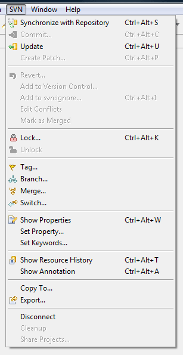

|
|
|
'SVN main menu group' contains shortcut items to most recent used SVN facilities. To activate this group refer to 'Window>Customize perspective...' menu item and on the 'Commands' tab check the 'SVN' group.
Synchronize with repository - starts the synchronization for selected resource.
Commit... - activates the commit action for selected resource.
Update - activates the update action for selected resource.
Create Patch... - creates a patch from a selected resource in compare with the repository location copy.
Revert... - reverts the file changes to the unmodified state.
Add to version control... - adds a selected resource to version control.
Add to svn:ignore... - adds a selected resource to svn:ignore.
Edit conflicts (for SVN Kit and Java HL) - opens editor for three versions (remote, local, after performing operation) of the file, marked as conflicted, so the user can edit conflicts manually and mark the resource as merged.
Mark as merged... - mark the file as if it is already merged.
Lock - locks the selected resource, so other users can not overwrite it.
Unlock - unlocks the selected resource.
Tag - creates a tag.
Branch - creates a branch.
Merge - opens merge dialog.
Switch - associate project with another repository location.
Switch - associate project with another repository location.
Show properties - shows SVN® Properties View for a selected resource.
Set properties... - allows the user to set SVN® Properties for a selected resource.
Set keywords... - allows the user to set keywords for a selected resource.
Show Resource History - shows SVN History View for a selected resource.
Show Annotations - shows SVN Annotations View for a selected resource.
Copy To... - copies selected resource to another location.
Export... - exports selected resource to the local folder.
Share Project... - starts sharing wizard for a selected project.